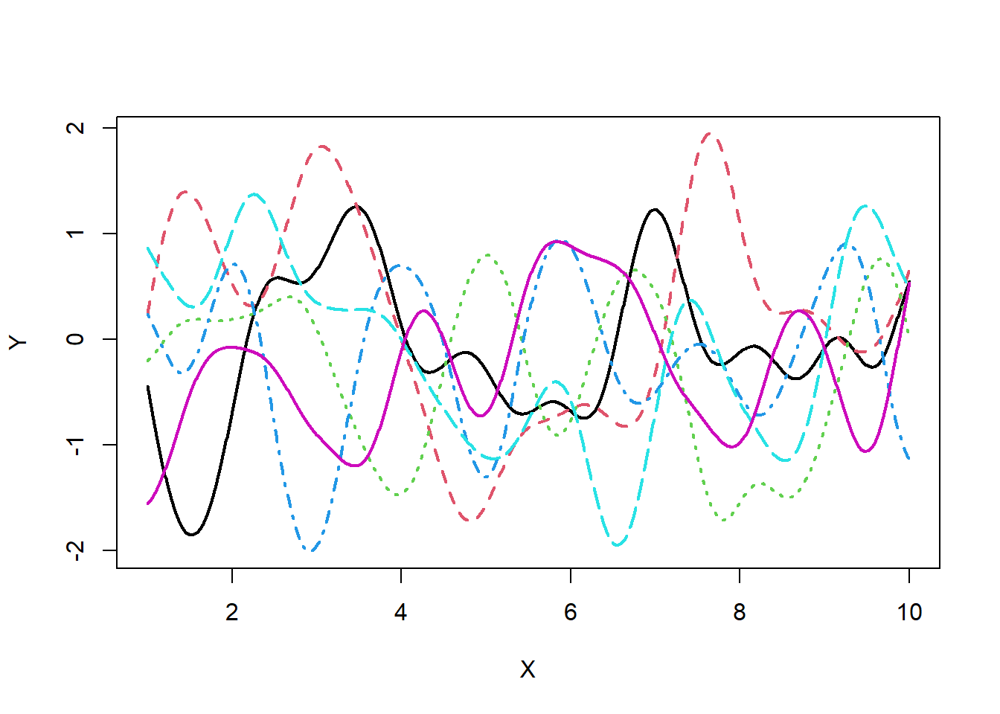

Implementing Gaussian regression.

Hi. Yesterday, I wrote an article about Bayesian Vector Autoregression.
In the article, the topic of hyperparameter tuning came up, and looking for some efficient way to tune it, I found Bayesian Optimization. Since I am planning to use machine learning methods in daily GDP, I thought that Bayesian Optimization could be quite useful, and I spent all night yesterday to understand it.
I will implement it here, but Bayesian Optimization uses Gaussian Pocess Regression (GPR), and my motivation for writing this entry was to implement it first. I will write about the implementation of Bayesian Optimization after this entry.
1. What is GPR?
The GRP is, simply put, a type of nonlinear regression method using Bayesian estimation. Although the model itself is linear, it is characterized by its ability to estimate infinite nonlinear transformations of input variables using a kernel trick as explanatory variables (depending on what you choose for the kernel).
The GPR assumes that \(N\) input and teacher data are available for training, and the \(N+1\) of input data are also available. From this situation, we can predict the \(N+1\)th teacher data.
The data contains noise and follows the following probability model.
\[
t_{i} = y_{i} + \epsilon_{i}
\]
where \(t_{i}\) is the \(i\)th observable teacher data (scalar), \(y_{i}\) is the unobservable output data (scalar), and \(\beta_{i}\) follows a normal distribution \(N(0, \beta^{-1})\) with measurement error. \(y_{i}\) follows the following probability model.
\[ \displaystyle y_{i} = \textbf{w}^{T}\phi(x_{i}) \]
where \(x_{i}\) is the ith input data vector, \(\phi(・)\) is the non-linear function and \(\bf{w}^{T}\) is the weight coefficient (regression coefficient) vector for each input data. As a nonlinear function, I assume \(\psi(x_{i}) = (x_{1,i}, x_{1,i}^{2},... ,x_{1,i}x_{2,i},...)\). (\(x_{1,i}\) is the first variable in the \(i\)th input data \(x_{i}\)). The conditional probability of obtaining \(t_{i}\) from the probabilistic model of the teacher data, with the \(i\)th output data \(y_{i}\) obtained, is
\[ p(t_{i}|y_{i}) = N(t_{i}|y_{i},\beta^{-1}) \]
\(\displaystyle \textbf{t} = (t_{1},... ,t_{n})^{T}\) and \(\displaystyle \textbf{y} = (y_{1},... ,y_{n})^{T}\), then by extending the above equation, we have
\[ \displaystyle p(\textbf{t}|\textbf{y}) = N(\textbf{t}|\textbf{y},\beta^{-1}\textbf{I}_{N}) \]
We assume that the expected value of \(\textbf{w}\) as a prior distribution is 0, and all variances are \(\alpha\). We also assume that \(\displaystyle \textbf{y}\) follows a Gaussian process. A Gaussian process is one where the simultaneous distribution of \(\displaystyle \textbf{y}\) follows a multivariate Gaussian distribution. In code, it looks like this
# Define Kernel function
Kernel_Mat <- function(X,sigma,beta){
N <- NROW(X)
K <- matrix(0,N,N)
for (i in 1:N) {
for (k in 1:N) {
if(i==k) kdelta = 1 else kdelta = 0
K[i,k] <- K[k,i] <- exp(-t(X[i,]-X[k,])%*%(X[i,]-X[k,])/(2*sigma^2)) + beta^{-1}*kdelta
}
}
return(K)
}
N <- 10 # max value of X
M <- 1000 # sample size
X <- matrix(seq(1,N,length=M),M,1) # create X
testK <- Kernel_Mat(X,0.5,1e+18) # calc kernel matrix
library(MASS)
P <- 6 # num of sample path
Y <- matrix(0,M,P) # define Y
for(i in 1:P){
Y[,i] <- mvrnorm(n=1,rep(0,M),testK) # sample Y
}
# Plot
matplot(x=X,y=Y,type = "l",lwd = 2)
The covariance matrix \(K\) between the elements of \(\displaystyle \textbf{y}\), \(\displaystyle y_{i} = \textbf{w}^{T}\phi(x_{i})\) is calculated using the kernel method from the input \(x\). Then, from this \(K\) and average 0, we generate six series of multivariate normal random numbers and plot them.As these series are computed from a covariance matrix, we model that the more positive the covariance of each element, the more likely they are to be the same. Also, as you can see in the graphs, the graphs are very smooth and very flexible in their representation. The code samples and plots 1000 input points, limiting the input to 0 to 10 due to computational cost, but in principle, \(x\) is defined in the real number space, so \(p(\textbf{y})\) follows an infinite dimensional multivariate normal distribution.
As described above, since \(\displaystyle \textbf{y}\) is assumed to follow a Gaussian process, \(p(\textbf{y})\) follows a multivariate normal distribution \(N(\textbf{y}|0,K)\) with simultaneous probability \(p(\textbf{y})\) averaging 0 and the variance covariance matrix \(K\). Each element \(K_{i,j}\) of \(K\) is
\[ \begin{eqnarray} K_{i,j} &=& cov[y_{i},y_{j}] = cov[\textbf{w}\phi(x_{i}),\textbf{w}\phi(x_{j})] \\ &=&\phi(x_{i})\phi(x_{j})cov[\textbf{w},\textbf{w}]=\phi(x_{i})\phi(x_{j})\alpha \end{eqnarray} \]
Here, the \(\phi(x_{i})\phi(x_{j})\alpha\) is more expensive as the dimensionality of the \(\phi(x_{i})\) is increased (i.e., the more non-linear transformation is applied, the less the calculation is completed). However, when the kernel function \(k(x,x')\) is used, the computational complexity is higher in the dimensions of the sample size of the input data \(x_{i},x_{j}\), so the computation becomes easier. There are several types of kernel functions, but the following Gaussian kernels are commonly used.
\[ k(x,x') = a \exp(-b(x-x')^{2}) \]
Now that we have defined the concurrent probability of \(\displaystyle \textbf{y}\), we can find the joint probability of \(\displaystyle \textbf{t}\).
\[ \begin{eqnarray} \displaystyle p(\textbf{t}) &=& \int p(\textbf{t}|\textbf{y})p(\textbf{y}) d\textbf{y} \\ \displaystyle &=& \int N(\textbf{t}|\textbf{y},\beta^{-1}\textbf{I}_{N})N(\textbf{y}|0,K)d\textbf{y} \\ &=& N(\textbf{y}|0,\textbf{C}_{N}) \end{eqnarray} \]
where \(\textbf{C}_{N} = K + \beta^{-1}\beta^{I}_{N}\). Note that the last expression expansion uses the regenerative nature of the normal distribution (the proof can be easily derived from the moment generating function of the normal distribution). The point is just to say that the covariance is the sum of the covariances of the two distributions, since they are independent. Personally, I imagine that \(p(\textbf{y})\) is the prior distribution of the Gaussian process I just described, \(p(\textbf{t}|\textbf{y})\) is the likelihood function, and \(p(\textbf{t})\) is the posterior distribution. The only constraint on the prior distribution \(p(\textbf{y})\) is that it is smooth with a loosely constrained distribution. The joint probability of \(N\) observable teacher data \(\textbf{t}\) and \(t_{N+1}\) is
\[ p(\textbf{t},t_{N+1}) = N(\textbf{t},t_{N+1}|0,\textbf{C}_{N+1}) \]
where \(\textbf{C}_{N+1}\) is
\[ \textbf{C}_{N+1} = \left( \begin{array}{cccc} \textbf{C}_{N} & \textbf{k} \\ \textbf{k}^{T} & c \\ \end{array} \right) \]
where \(\textbf{k} = (k(x_{1},x_{N+1}),...,k(x_{N},x_{N+1}))\) and \(c = k(x_{N+1},x_{N+1})\). The conditional distribution \(p(t_{N+1}|\textbf{t})\) can be obtained from the joint distribution of \(\textbf{t}\) and \(t_{N+1}\).
\[ p(t_{N+1}|\textbf{t}) = N(t_{N+1}|\textbf{k}^{T}\textbf{C}_{N+1}^{-1}\textbf{t},c-\textbf{k}^{T}\textbf{C}_{N+1}^{-1}\textbf{k}) \]
In calculating the conditional distribution, we use Properties of the conditional multivariate normal distribution. As you can see from the above equation, the conditional distribution \(p(t_{N+1}|\textbf{t})\) can be calculated if \(N+1\) input data, \(N\) teacher data, and parameters \(a,b\) of the kernel function are known, so if any point is given as input data, it is possible to approximate the Generating Process. The nice thing about the GPR is that it gives predictions without the direct estimation of the above defined probabilistic model \(\displaystyle y_{i} = \textbf{w}^{T}\phi(x_{i})\). The stochastic model has \(\phi(x_{i})\), which converts the input data to a high-dimensional vector through a nonlinear transformation. Therefore, the higher the dimensionality, the larger the computational complexity of the \(\phi(x_{i})\phi(x_{j})\alpha\) will be, but the GPR uses a kernel trick, so the computational complexity of the sample size dimension of the input data vector will be sufficient.
2. Implementation of the `GPR’
For now, let’s implement this in R, which I’ve implemented in PRML test data, so I tweaked it.
library(ggplot2)
library(grid)
# 1.Gaussian Process Regression
# PRML's synthetic data set
curve_fitting <- data.frame(
x=c(0.000000,0.111111,0.222222,0.333333,0.444444,0.555556,0.666667,0.777778,0.888889,1.000000),
t=c(0.349486,0.830839,1.007332,0.971507,0.133066,0.166823,-0.848307,-0.445686,-0.563567,0.261502))
f <- function(beta, sigma, xmin, xmax, input, train) {
kernel <- function(x1, x2) exp(-(x1-x2)^2/(2*sigma^2)); # define Kernel function
K <- outer(input, input, kernel); # calc gram matrix
C_N <- K + diag(length(input))/beta
m <- function(x) (outer(x, input, kernel) %*% solve(C_N) %*% train) # coditiona mean
m_sig <- function(x)(kernel(x,x) - diag(outer(x, input, kernel) %*% solve(C_N) %*% t(outer(x, input, kernel)))) #conditional variance
x <- seq(xmin,xmax,length=100)
output <- ggplot(data.frame(x1=x,m=m(x),sig1=m(x)+1.96*sqrt(m_sig(x)),sig2=m(x)-1.96*sqrt(m_sig(x)),
tx=input,ty=train),
aes(x=x1,y=m)) +
geom_line() +
geom_ribbon(aes(ymin=sig1,ymax=sig2),alpha=0.2) +
geom_point(aes(x=tx,y=ty))
return(output)
}
grid.newpage() # make a palet
pushViewport(viewport(layout=grid.layout(2, 2))) # divide the palet into 2 by 2
print(f(100,0.1,0,1,curve_fitting$x,curve_fitting$t), vp=viewport(layout.pos.row=1, layout.pos.col=1))
print(f(4,0.10,0,1,curve_fitting$x,curve_fitting$t), vp=viewport(layout.pos.row=1, layout.pos.col=2))
print(f(25,0.30,0,1,curve_fitting$x,curve_fitting$t), vp=viewport(layout.pos.row=2, layout.pos.col=1))
print(f(25,0.030,0,1,curve_fitting$x,curve_fitting$t), vp=viewport(layout.pos.row=2, layout.pos.col=2)) 
The \(beta^{-1}\) represents the measurement error. The higher the value of \(\beta\) (i.e., the smaller the measurement error), the easier it is to overfit, since the error of the predictions is less than that of the data already available. This is the case in the top left corner of the figure above. The top left corner is \(\beta=400\), which means that it overfits the current data available. Conversely, a small value of \(\beta\) will produce predictions that ignore the errors with the teacher data, but may improve the generalization performance. The top right figure shows this. For \(beta=4\), the average barely passes through the data points we have, and \(b\) is currently available. \(b\) represents the magnitude of the effect of the data we have at the moment on the surroundings. If \(b\) is small, the adjacent points will interact strongly with each other, which may reduce the accuracy but increase the generalization performance. Conversely, if \(b\) is large, the result will be unnatural, fitting only individual points. This is illustrated in the figure below right (\(b=\frac{1}{0.03}, \beta=25\)). As you can see, the graph is overfitting because of the large \(\beta\) and because \(b\) is also large, so it fits only individual points, resulting in an absurdly large graph. The bottom left graph is the best. It has \(b=\frac{1}{0.3}\), and \(b=2\). Let’s try extending the x interval of this graph to [0,2]. Then we get the following graph.
grid.newpage() # make a palet
pushViewport(viewport(layout=grid.layout(2, 2))) # divide the palet into 2 by 2
print(f(100,0.1,0,2,curve_fitting$x,curve_fitting$t), vp=viewport(layout.pos.row=1, layout.pos.col=1))
print(f(4,0.10,0,2,curve_fitting$x,curve_fitting$t), vp=viewport(layout.pos.row=1, layout.pos.col=2))
print(f(25,0.30,0,2,curve_fitting$x,curve_fitting$t), vp=viewport(layout.pos.row=2, layout.pos.col=1))
print(f(25,0.030,0,2,curve_fitting$x,curve_fitting$t), vp=viewport(layout.pos.row=2, layout.pos.col=2)) 
As you can see, all the graphs except the bottom left one have a band of 95% confidence intervals that immediately widen and are completely useless where there are no data points. On the other hand, the lower left graph has a decent band up to 1.3 to 1.4, and the average value seems to pass through a point that is consistent with our intuitive understanding of the function. You can also see that if you are too far away from the observable data points, you will get a normal distribution with a mean of 0 and a variance of 1 no matter what you give to the parameters. Now that we have shown that the accuracy of the prediction of the out-sample varies depending on the value of the parameters, the question here is how to estimate these hyperparameters. This is done by using the gradient method to find the hyperparameters that maximize the log-likelihood function \(\ln p(\bf{t}|a,b)\) ((\(\beta\) seems to be of a slightly different type, and the developmental discussion appears to take other tuning methods. We haven’t gotten to that level yet, so we’ll calibrate it here). Since \(p(\textbf{t}) = N(\textbf{y}|0, \textbf{C}_{N})\), the log-likelihood function is
\[ \displaystyle \ln p(\textbf{t}|a,b,\beta) = -\frac{1}{2}\ln|\textbf{C}_{N}| - \frac{N}{2}\ln(2\pi) - \frac{1}{2}\textbf{t}^{T}\textbf{C}_{N}^{-1}\textbf{k} \]
After that, we can differentiate this with the parameters and solve the obtained simultaneous equations to get the maximum likelihood estimator. Now let’s get the derivatives.
\[ \displaystyle \frac{\partial}{\partial \theta_{i}} \ln p(\textbf{t}|\theta) = -\frac{1}{2}Tr(\textbf{C}_{N}^{-1}\frac{\partial \textbf{C}_{N}}{\partial \theta_{i}}) + \frac{1}{2}\textbf{t}^{T}\textbf{C}_{N}^{-1} \frac{\partial\textbf{C}_{N}}{\partial\theta_{i}}\textbf{C}_{N}^{-1}\textbf{t} \]
where \(theta\) is the parameter set and \(theta_{i}\) represents the \(i\)th parameter. If you don’t understand this derivative here in the supplement to (C.21) and (C.22) equations. Since we are using the Gaussian kernel in this case, we get
\[ \displaystyle \frac{\partial k(x,x')}{\partial a} = \exp(-b(x-x')^{2}) \\ \displaystyle \frac{\partial k(x,x')}{\partial b} = -a(x-x')^{2}\exp(-b(x-x')^{2}) \]
from the above formula. However, this time we will use the gradient method to find the best parameters. Here’s the code for the implementation (it’s pretty much a lost cause).
g <- function(xmin, xmax, input, train){
# initial value
beta = 100
b = 1
a = 1
learning_rate = 0.1
itermax <- 1000
if (class(input) == "numeric"){
N <- length(input)
} else
{
N <- NROW(input)
}
kernel <- function(x1, x2) a*exp(-0.5*b*(x1-x2)^2); # define kernel
derivative_a <- function(x1,x2) exp(-0.5*b*(x1-x2)^2)
derivative_b <- function(x1,x2) -0.5*a*(x1-x2)^2*exp(-0.5*b*(x1-x2)^2)
dloglik_a <- function(C_N,y,x1,x2) {
-sum(diag(solve(C_N)%*%outer(input, input, derivative_a)))+t(y)%*%solve(C_N)%*%outer(input, input, derivative_a)%*%solve(C_N)%*%y
}
dloglik_b <- function(C_N,y,x1,x2) {
-sum(diag(solve(C_N)%*%outer(input, input, derivative_b)))+t(y)%*%solve(C_N)%*%outer(input, input, derivative_b)%*%solve(C_N)%*%y
}
# loglikelihood function
likelihood <- function(b,a,x,y){
kernel <- function(x1, x2) a*exp(-0.5*b*(x1-x2)^2)
K <- outer(x, x, kernel)
C_N <- K + diag(N)/beta
itermax <- 1000
l <- -1/2*log(det(C_N)) - N/2*(2*pi) - 1/2*t(y)%*%solve(C_N)%*%y
return(l)
}
K <- outer(input, input, kernel)
C_N <- K + diag(N)/beta
for (i in 1:itermax){
kernel <- function(x1, x2) a*exp(-b*(x1-x2)^2)
derivative_b <- function(x1,x2) -0.5*a*(x1-x2)^2*exp(-0.5*b*(x1-x2)^2)
dloglik_b <- function(C_N,y,x1,x2) {
-sum(diag(solve(C_N)%*%outer(input, input, derivative_b)))+t(y)%*%solve(C_N)%*%outer(input, input, derivative_b)%*%solve(C_N)%*%y
}
K <- outer(input, input, kernel) # calc gram matrix
C_N <- K + diag(N)/beta
l <- 0
if(abs(l-likelihood(b,a,input,train))<0.0001&i>2){
break
}else{
a <- as.numeric(a + learning_rate*dloglik_a(C_N,train,input,input))
b <- as.numeric(b + learning_rate*dloglik_b(C_N,train,input,input))
}
l <- likelihood(b,a,input,train)
}
K <- outer(input, input, kernel)
C_N <- K + diag(length(input))/beta
m <- function(x) (outer(x, input, kernel) %*% solve(C_N) %*% train)
m_sig <- function(x)(kernel(x,x) - diag(outer(x, input, kernel) %*% solve(C_N) %*% t(outer(x, input, kernel))))
x <- seq(xmin,xmax,length=100)
output <- ggplot(data.frame(x1=x,m=m(x),sig1=m(x)+1.96*sqrt(m_sig(x)),sig2=m(x)-1.96*sqrt(m_sig(x)),
tx=input,ty=train),
aes(x=x1,y=m)) +
geom_line() +
geom_ribbon(aes(ymin=sig1,ymax=sig2),alpha=0.2) +
geom_point(aes(x=tx,y=ty))
return(output)
}
print(g(0,1,curve_fitting$x,curve_fitting$t), vp=viewport(layout.pos.row=1, layout.pos.col=1))
Yes, it does sound like good (lol). That’s it for today, for now.
Ayato Ashihara
company employee
This blog is a nightly update by a man who is working in his third year since completing graduate school. The content of this blog has nothing to do with the official position of the author’s organization.